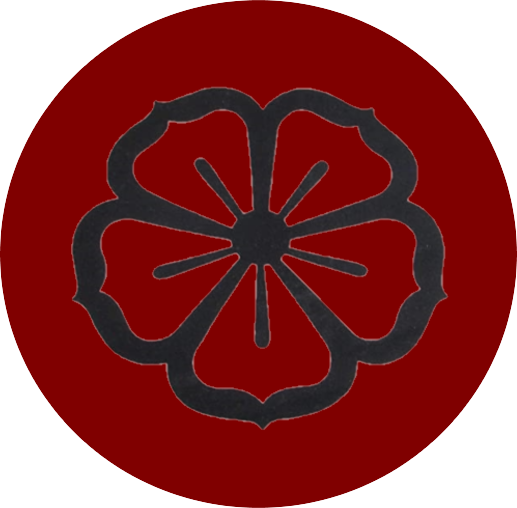

Bem vindos ao
Miyagi Buffet



i
Sobre nós
Mussum Ipsum, cacilds vidis litro abertis. Interessantiss quisso pudia ce receita de bolis, mais bolis eu num gostis.Tá deprimidis, eu conheço uma cachacis que pode alegrar sua vidis.Praesent vel viverra nisi. Mauris aliquet nunc non turpis scelerisque, eget.In elementis mé pra quem é amistosis quis leo. Casamentiss faiz malandris se pirulitá.Quem manda na minha terra sou euzis!Praesent malesuada urna nisi, quis volutpat erat hendrerit non. Nam vulputate dapibus.Suco de cevadiss, é um leite divinis, qui tem lupuliz, matis, aguis e fermentis. Copo furadis é disculpa de bebadis, arcu quam euismod magna.Não sou faixa preta cumpadi, sou preto inteiris, inteiris.Aenean aliquam molestie leo, vitae iaculis nisl.Praesent vel viverra nisi. Mauris aliquet nunc non turpis scelerisque, eget.
Quem num gosta di mim que vai caçá sua turmis!In elementis mé pra quem é amistosis quis leo.Paisis, filhis, espiritis santis.Leite de capivaris, leite de mula manquis sem cabeça. Sapien in monti palavris qui num significa nadis i pareci latim.Quem num gosta di mé, boa gentis num é.Si num tem leite então bota uma pinga aí cumpadi!Nullam volutpat risus nec leo commodo, ut interdum diam laoreet. Sed non consequat odio. Interagi no mé, cursus quis, vehicula ac nisi.Casamentiss faiz malandris se pirulitá.Suco de cevadiss, é um leite divinis, qui tem lupuliz, matis, aguis e fermentis.Praesent malesuada urna nisi, quis volutpat erat hendrerit non. Nam vulputate dapibus.
$